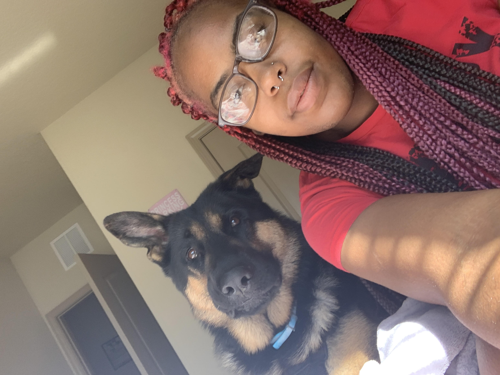
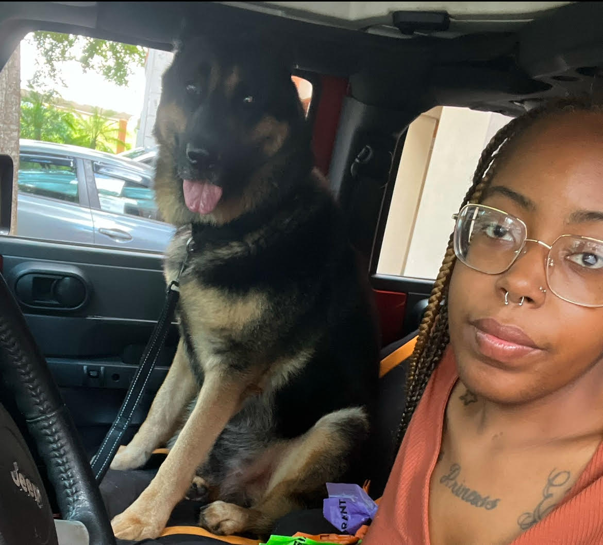

Who is Champion
Champion is now 9 years old, he is the sweetest boy. We have traveled to 9 different states together. On a daily basis he enjoys laying out on the deck, playing catch, and chasing around my 19 month old daughter. Champion isn't always sunshine, he is very picky with what he eats. He doesn't like chicken or really anything without sauce. If he could talk he would say he would go for endless swims and walks as long as he had Beggin Snacks and Dog Ice Cream waiting when he got home. Even though he is a senior dog now he wakes up everyday excited and ready to be my bestfriend.
Champion and I


Things Champion Helps Me With
Who am I
I am Clarissa, I am 31 years old. Orignally I am from Detroit, MI where I spent the first 26 years of my life and unfortunately I endured some things that caused my anxiety. I love being outside and enjoying more extreme sports like ziplining, skydiving, and base jumping. I am a traveler, I don't like visiting the same place twice. My dream is to one day open a soul food resturant in honor of my late grandmother that will also help the less fortunate and the community with a garden. After I finish college I do plan on persuing my Bachelors Degree and moving to Arizona or Las Vegas. I am always willing to help and learn, I think that really defines who I am.